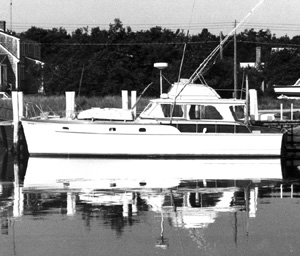

|  copyright - WHOI |
Built: 1959, by Egg Harbor. Length: 36’' Beam: 12'3”" Headroom: 6’'6" Draft: 3'3" |
Woods Hole Oceanographic Institution used Paul Revere for tagging
and observation of migratory game fish.
PAUL REVERE 1968-1969
Woods Hole Oceanographic Institution used Paul Revere for tagging
and observation of migratory game fish.
|